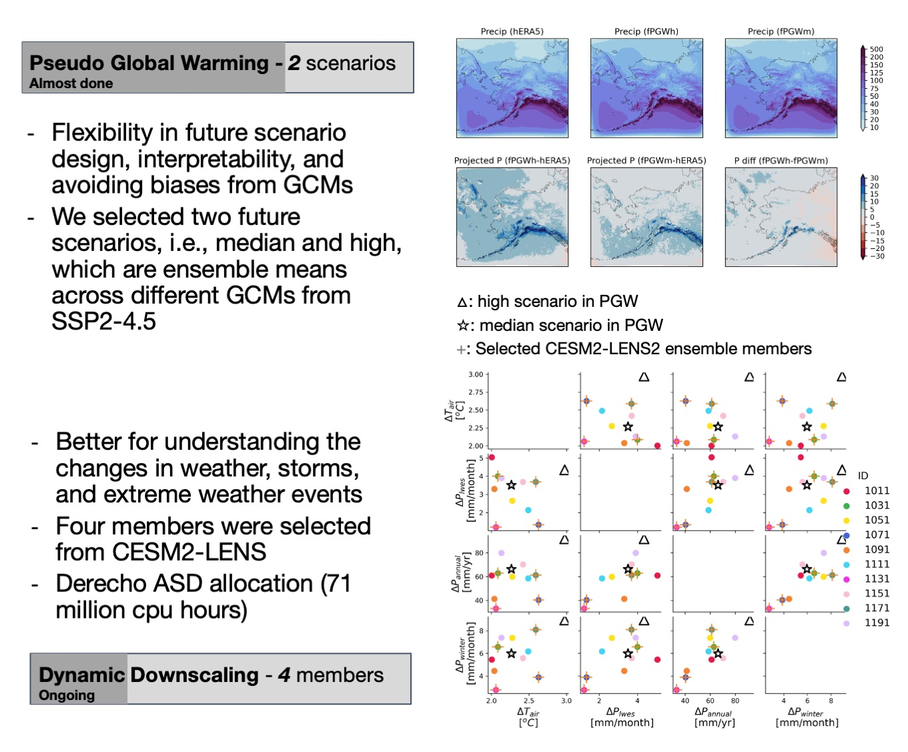

Assess climate impacts on freshwater systems and water-related sectors

Hydroclimate in Alaska and Yukon River Basin
To quantify the potential climate impacts on the hydroclimate in Alaska, we used the Pseudo Global Warming method. This method is flexible in future scenario design, easy to interpret, and avoids biases from GCMs. We selected two future scenarios, including median and high scenarios, which are ensemble means across different GCMs from SSP2-4.5. However, one constraint about PGW method is its limitation in predicting projected changes in weather, storms, and extreme weather events. Therefore, we conducted direct dynamic downscaling of 4 ensemble members from CESM2 large ensemble dataset.
Publication: Cheng, Y., A. Craig, K. Musselman, J. Hamman, A. J. Newman: Projected changes of hydroclimate in Alaska and Yukon River Basin for the mid 21st century. In Prep Dataset: Cheng, Y., A. Craig, K. Musselman, J. Hamman, A. J. Newman: Projected changes in hydroclimate using coupled WRF-CTSM for Alaska and Yukon River Basin in the mid 21st century (2034-2064). In Prep
Thermal Extremes in Regulated River Systems in Southeastern U.S. Rivers
High river temperatures, or 'thermal extremes', can cause fish mortality and thermoelectric powerplant derating. However, cold hypolimnetic releases from thermally stratified reservoirs can depress tailwater temperatures and therefore alleviate thermal extremes. To assess multi-sectoral impacts of climate change over large regions, we evaluate thermal events according to three impact attributes: duration (D), intensity (I), and severity (S). We found that thermal mitigation from reservoir regulation will be stronger under climate change, decreasing the three metrics compared to the unregulated case. Even so, thermal extremes in the regulated setup will still be more severe under climate change.
Cheng, Y., N. Voisin, J. Yearsley, and B. Nijssen, 2020: Thermal extremes in regulated river systems under climate change: an application to southeastern U.S. rivers. Environmental Research Letters, doi:10.1088/1748-9326/ab8f5f
Environmental Suitability in Regulated River Systems for Selected Fish Species
In this study, I led the development of a combined model framework to predict historical environmental suitability of river reaches for specific fish species and estimate changes in suitability in response to changes in climate and reservoir operations. As a case study in the highly regulated and fragmented Tennessee River system, we examined the environmental suitability for nonnative rainbow trout (Oncorhynchus mykiss), a species of high recreational value, and native blackfin darter (Etheostoma nigripinne), an endemic species of unique ecological importance. By the end of the 21st century, historically suitable streams for rainbow trout will disappear due to higher river temperatures. Only 8% of historically suitable streams for blackfin darter will remain but over half of them will be unreachable by current populations due to dam blockage.
Cheng, Y., B. Nijssen, G. Holtgrieve, and J. Olden, 2022: Modeling the freshwater ecological response to changes in flow and thermal regimes influenced by reservoir dynamics. Journal of Hydrology, doi:10.1016/j.jhydrol.2022.127591.